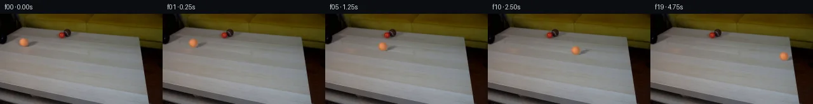
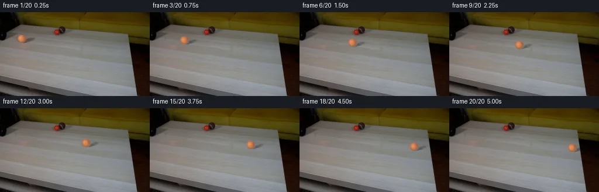
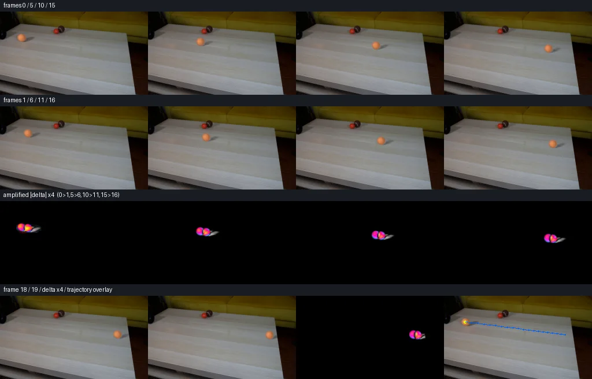

V0 · 初版 · 最终提交
![]()
Observable Generation Trace
把最终像素视频、Harness 冻结的每轮候选、真实工具事件和 Agent 自述放在同一页。可观测证据与模型自述分开标记，避免把“模型说它检查过”误当成真实工具调用。
![首帧]()
Static locked-off single-shot with fixed frame throughout filmed with constant framerate in real-time. The scene shows a realistic scientific demonstration. The scene only contains the described setup and actions. A light-colored wooden coffee table with a few small objects on it, including a brown tennis ball and a smaller red ball. The orange tennis ball rolls straight out of the black pipe over the entire table towards the right side.
首帧显示在左侧播放器初始画面。Track 权限、隔离和 tensor 一致性来自 run manifest，而不是 METHOD.md。
默认勾选初版和最终版；可选其他版本一起同步播放。仅检查图更新的连续重复快照已合并，回退旧视频仍保留为一次修订。
Observable events
来源：events.jsonl + run manifest
events.jsonl 可验证该 Agent 成功读取了 25 张 PNG；上面的 round 图不等同于读取次数，而是 Harness 独立冻结的候选。
Frozen candidates
每张图来自该 round 的真实 00 / 01 / 05 / 10 / 19 帧

pixels 359f4c8f430ebd7a · code 48d26a507369c234
--- previous/generate.py +++ current/generate.py @@ -0,0 +1,240 @@ +"""PixelWorld case_0012 — orange tennis ball rolling across the table. + +Pipeline (all local pixel math, no external models): +1. Segment the orange ball and its rightward cast/contact shadow with + analytic soft shapes matched to frame 0. +2. Inpaint the tabletop underneath once: anisotropic normalized-convolution + fill from clean table pixels (excludes pipe and the two static balls), + plus fine grain cloned from 18 px below. +3. Extract the ball sprite (unpremultiplied, radial rim fill) and the shadow + as a per-pixel attenuation layer. +4. Translate sprite + shadow with sub-pixel bilinear splatting along a + straight, mildly decelerating trajectory for frames 1..19. Frame 0 is the + untouched first frame. +""" +from pathlib import Path +import shutil +import numpy as np +import cv2 +from PIL import Image, ImageDraw + +import artifact_io + +CASE = Path(__file__).parent +N = 20 + +# --- frame-0 geometry (measured in OBSERVATION.md) ------------------------- +BX, BY = 36.5, 45.0 # orange ball center in frame 0 +SHX, SHY = 54.5, 47.4 # cast-shadow ellipse center (inpaint footprint) +CTX, CTY = 39.5, 51.8 # contact-shadow ellipse center (inpaint footprint) + +# trajectory +X0, Y0 = 36.5, 45.0 +DIST = 180.0 # total x travel (px) at tau = 1 (t = 5 s) +SLOPE = 0.13 # dy per dx (perspective-correct straight line) + + +def smoothstep(d, x0, x1): + t = np.clip((d - x0) / (x1 - x0), 0.0, 1.0) + return t * t * (3 - 2 * t) + + +def build_background(im): + """Remove ball + shadows from frame 0; return clean tabletop image.""" + h, w, _ = im.shape + yy, xx = np.mgrid[0:h, 0:w].astype(np.float32) + lum = im.mean(2) + + # enlarged analytic footprints so every soft halo pixel is covered + r = np.hypot(xx - BX, yy - BY) + rs = np.hypot((xx - SHX) / 19.0, (yy - SHY) / 8.8) + rc = np.hypot((xx - CTX) / 11.2, (yy - CTY) / 4.6) + m_ball = 1 - smoothstep(r, 8.6, 9.8) + m_sh = 1 - smoothstep(rs, 0.80, 1.02) + m_ct = 1 - smoothstep(rc, 0.70, 1.00) + mask = np.clip(np.maximum(np.maximum(m_ball, m_sh), m_ct), 0, 1) + hole = mask > 0.5 + + # clean-table reference: no pipe (left edge), no red/brown balls, + # and no pixels far from the robust per-row tone (deep shadow outliers) + row_ref = np.median(im[:, 112:208, :], axis=1) + good = (xx > 14) + good &= ~((xx > 83) & (xx < 119) & (yy > 26) & (yy < 49)) + good &= np.abs(lum - row_ref.mean(1)[:, None]) < 22 + known = good & ~hole + + # anisotropic normalized convolution: wide in x (horizontal planks), + # narrow in y; iterate so the hole centre is reached from clean pixels + work = im.copy() + kn = np.repeat(known[..., None].astype(np.float32), 3, 2) + for _ in range(14): + num = cv2.GaussianBlur(work * kn, (0, 0), sigmaX=40, sigmaY=4.0) + den = cv2.GaussianBlur(kn, (0, 0), sigmaX=40, sigmaY=4.0) + est = num / np.clip(den, 1e-4, None) + work = np.where(hole[..., None], est, work) + kn = np.where(hole[..., None], 1.0, kn) + + # fine surface grain cloned from the same columns 18 px farther front + src = np.roll(im, -18, axis=0) + grain = src - cv2.GaussianBlur(src, (0, 0), 2.2) + fill = np.clip(work + grain, 0, 255) + + me = smoothstep(mask, 0.10, 0.90)[..., None] + return np.clip(im * (1 - me) + fill * me, 0, 255) + + +def extract_layers(im, bg): + """Return (ball rgb float, ball alpha, shadow attenuation k layer).""" … diff truncated; 153 more lines …
pixels 359f4c8f430ebd7a · code ce7c6ca6181f868b
--- previous/generate.py
+++ current/generate.py
@@ -181,14 +181,15 @@
0, 255).astype(np.uint8) for a, b in pairs]
# last row: f18, f19, their diff, trajectory overlay on frame 0
- overlay = frames[0].copy()
+ overlay = Image.fromarray(frames[0].copy())
od = ImageDraw.Draw(overlay)
for f in range(N):
x, y = frame_center(f)
r = 2 if f == 0 else 1
od.ellipse((x - r, y - r, x + r, y + r),
fill=(255, 255, 0) if f == 0 else (0, 90, 255))
- od.line([frame_center(f) for f in range(N)], fill=(0, 90, 255), width=1)
+ od.line([tuple(map(int, frame_center(f))) for f in range(N)],
+ fill=(0, 90, 255), width=1)
row_d = [frames[18], frames[19],
np.clip(np.abs(frames[19].astype(int) - frames[18].astype(int)) * 4,
0, 255).astype(np.uint8), overlay]pixels 359f4c8f430ebd7a · code 5e5d4f4d4e1ada29
--- previous/generate.py
+++ current/generate.py
@@ -192,7 +192,7 @@
fill=(0, 90, 255), width=1)
row_d = [frames[18], frames[19],
np.clip(np.abs(frames[19].astype(int) - frames[18].astype(int)) * 4,
- 0, 255).astype(np.uint8), overlay]
+ 0, 255).astype(np.uint8), np.array(overlay)]
for row, ims, label in [(0, row_a, 'frames 0 / 5 / 10 / 15'),
(1, row_b, 'frames 1 / 6 / 11 / 16'),Final visual checks
Harness 保存的最终产物


Agent claims
以下文字由生成 Agent 撰写，不等同于工具证据
All measurements in native first_frame.png pixels (256×144, RGB).
Locked-off view of a light wood-plank coffee table (four horizontal tone bands, fine isotropic grain) in front of a yellow couch; dark reddish floor to the right. On/near the table:
"The orange tennis ball rolls straight out of the black pipe over the entire table towards the right side." In frame 0 the ball has just left the pipe at the left. It must continue a straight roll across the tabletop to the right side while the camera and everything else stay locked.
| f | t (s) | x | y | f | t (s) | x | y | |
|---|---|---|---|---|---|---|---|---|
| 0 | 0.00 | 36.50 | 45.00 | 10 | 2.50 | 137.75 | 58.16 | |
| 1 | 0.25 | 47.64 | 46.45 | 11 | 2.75 | 146.64 | 59.32 | |
| 2 | 0.50 | 58.55 | 47.87 | 12 | 3.00 | 155.30 | 60.44 | |
| 3 | 0.75 | 69.24 | 49.26 | 13 | 3.25 | 163.74 | 61.54 | |
| 4 | 1.00 | 79.70 | 50.62 | 14 | 3.50 | 171.95 | 62.61 | |
| 5 | 1.25 | 89.94 | 51.95 | 15 | 3.75 | 179.94 | 63.65 | |
| 6 | 1.50 | 99.95 | 53.25 | 16 | 4.00 | 187.70 | 64.66 | |
| 7 | 1.75 | 109.74 | 54.52 | 17 | 4.25 | 195.24 | 65.64 | |
| 8 | 2.00 | 119.30 | 55.76 | 18 | 4.50 | 202.55 | 66.59 | |
| 9 | 2.25 | 128.64 | 56.98 | 19 | 4.75 | 209.64 | 67.51 |
first_frame.png (never rendered).Continue the locked-off shot: the matte orange tennis ball that has just left the black pipe rolls straight across the light wood table to the right side over 5 s (20 frames, 4 fps, 256×144). Everything else stays static.
Everything was produced with local Python pixel operations only
(NumPy, Pillow, OpenCV image-processing primitives). No external data,
models, engines or references were used. Run: python3 generate.py.
Frame-0 geometry was measured directly from the pixels: ball centre (36.5, 45.0), core r 6.2 / soft edge to r 8; the long cast shadow to the right of the ball (light comes from the left) with core about x 44–61, y 43–51 and halo to x ≈ 67; a small contact shadow under the ball; red ball centre ≈ (94.7, 38), brown ball ≈ (106.5, 30.5); table right edge x ≈ 219–223 for y 45–70.
cv2.remap, which exactly matches the smooth sphere shading
gradient. The ball has no visible seam or marking in frame 0, so physical
spin is optically invisible — translation fully represents rolling.k = cover·(1 − observed/bg) over
the two shadow ellipses, stored independently of the background colour so
it darkens whatever table tone it is placed on (bg·(1 − k)).y = 45 + 0.13·(x − 36.5) (a 3D straight line
projects to a 2D straight line; slope matches the table edges). This line
passes ≈ 14.3 px from the red ball centre and ≈ 21 px from the brown one,
so the ball rolls past in front of (below) them without contact.s(τ) = 1.25τ − 0.25τ² (τ = t/5), i.e. final speed
0.6× initial. Frame 19 centre (209.6, 67.5) is still fully on the table
(edge x ≈ 222 there); it reaches the right side at t = 5 s.artifact_io.save writes pixels.npz (H×W×20 packed 0xRRGGBB uint32),
frames/00..19.png, inspection.png, and the standalone index.html
player. frames/00.png is then replaced with a byte copy of
first_frame.png. The script asserts tensor/PNG parity for every frame and
exact equality of frame 00 with the supplied first frame.
transition_check.png shows representative frame pairs, amplified ×4
absolute inter-frame differences (movement is confined to the ball + its
shadow; the rest of the scene is numerically static), and a trajectory
overlay.